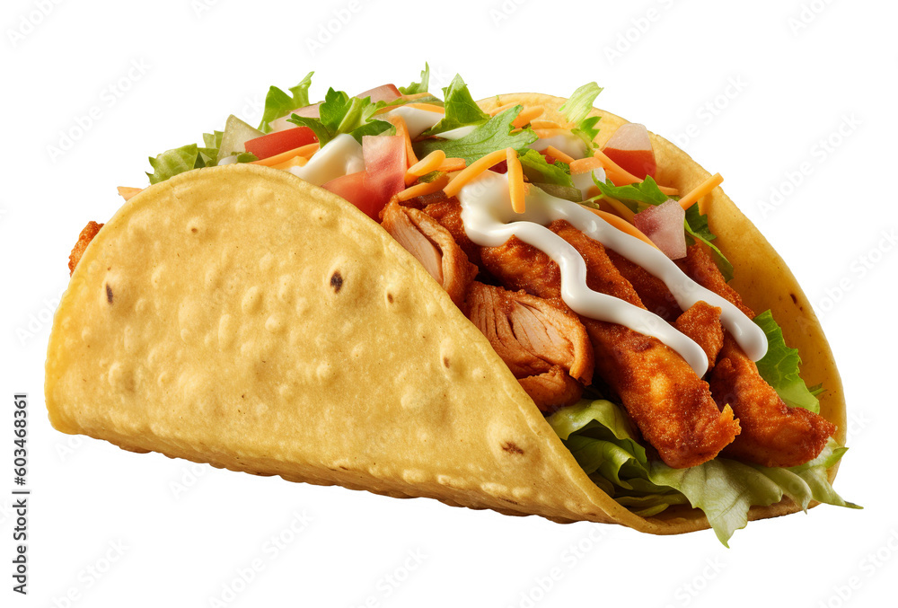

Chicken Tacos

Description
Chicken tacos are a delightful fusion of tender, seasoned chicken in a soft or crispy tortilla, topped with fresh cilantro, tangy lime, creamy avocado, juicy tomatoes, and cheese.
This Mexican-inspired dish offers a symphony of tastes and textures, making it a versatile and delicious choice for any meal, impressing with its simple yet mouthwatering combination of ingredients.
Ingredients
For the Chicken:
- Boneless, skinless chicken breasts or thighs
- Olive oil
- Garlic powder
- Onion powder
- Cumin
- Paprika
- Chilli powder
- Salt
- Black pepper
- Lime juice
For the Tacos:
- Soft or crispy tortillas
- Fresh cilantro, chopped
- Lime wedges
- Avocados, sliced or mashed
- Tomatoes, diced
- Shredded lettuce (optional)
- Shredded cheese (such as cheddar or cotija)
- Sour cream (optional)
- Salsa or pico de gallo
- Hot sauce (optional)
Steps
Season Chicken:
- Mix olive oil, spices and lime juice.
- Coat chicken.
Cook Chicken:
- Heat oil in skillet.
- Cook chicken 6-7 minutes each side.
- Rest, then shred or slice.
Prepare Toppings:
- Chop cilantro, dice tomatoes, slive avocado and prepare lime wedges.
- Optional: shred lettuce and cheese, prepare sour cream, salsa, hot sauce.
Assemble Tacos:
- Warm tortillas in skillet.
- Fill with chicken and toppings.
- Squeeze lime juice over tacos.
Serve:
Enjoy immediately with extra lime wedges!